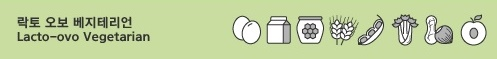

* 채식주의자 종류
- 플랙시테리언
- 폴로베지테리언
- 페스코 베지테리언
- 락토 오보 베지테리언
- 오보 베지테리언
- 락토 베지테리언
- 비건
락토 오보 베지테리언이란 무엇인가?
오보 락토 베지테리언(Ovo - Lacto vegetarian)이라고도 한다.
비건 허용 식품에 추가로 달걀과 유제품 그리고 꿀 등을 섭취한다.
동양의 종교적인 채식주의자 대다수가 이 락토 오보 베지테리언에 속다. 그래서 가장 많은 사람들이 속해 있는 베지테리언이라 할 수 있습니다.
달걀과 우유를 허용하기 때문에 다양한 영양소를 부족하지 않게 얻을 수 있습니다.

락토오보 더 알아보기
#식단#블로그